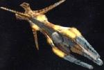
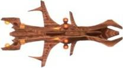

|
Specie 8472 - Astronavi varie
|
La
specie 8472 usa navi di biomassa organica,
che sembrano essere delle forme di vita complete e non semplici componenti
organici, come evidenziato dalle vertebre visibili entrando nella nave. Ogni
nave ha un equipaggio composto da un solo essere. Le navi appaiono impenetrabili
alla tecnologia della Federazione e dei Borg:
i sensori delle navi non possono penetrare la superficie delle navi di biomassa,
il teletrasporto non
può agganciare dei segnali all'interno di esse e i raggi
traenti non hanno alcun effetto. Le loro navi usano una propulsione warp con
tecnologia ad antimateria. Dentro la nave vi sono condotti organici che
trasportano un fluido elettro-dinamico, che potrebbe essere la loro fonte di
energia. Vi è inoltre una matrice binaria interlacciata con peptidi neurali,
che potrebbe costituire il network informatico. Le navi hanno la capacità di
rigenerarsi autonomamente e sono composte dallo stesso materiale organico dei
loro piloti. La potenza di fuoco di una nave è straordinaria e può combinare
la potenza di fuoco con altre navi formando un cerchio con una nave al centro:
tutte le navi dirigono il fuoco sulla nave al centro, che raccoglie tutta la
potenza di fuoco e la amplifica creando una potenza di fuoco tale da distruggere
un pianeta.
Dimensioni: 200 metri di lunghezza, 40 metri di larghezza, 40 metri di
altezza
Massa: 25.000 tonnellate
Velocità: Warp 9.97 e transwarp
Armamenti: un'arma ad energia sconosciuta di 15.500.000 terawatt di
potenza
Equipaggio: un solo elemento
|
[Senza Nome]
Bionave. |
Scorpion |
|
[Senza
Nome] Astronave che, in unione con almeno altre otto bionavi, può originare
una potenza di fuoco in grado di distruggere un pianeta. |
Scorpion |